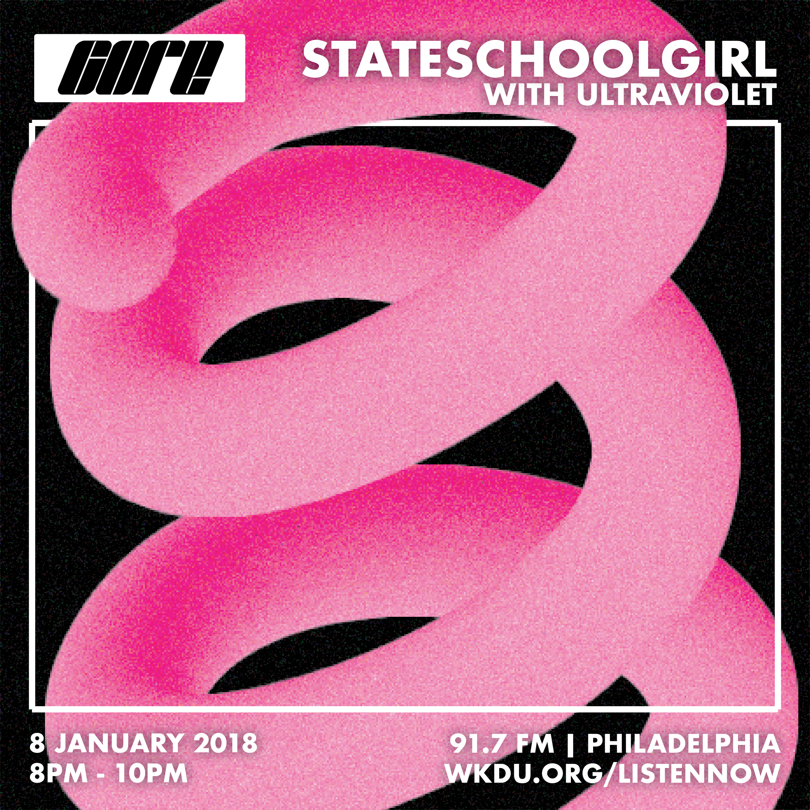
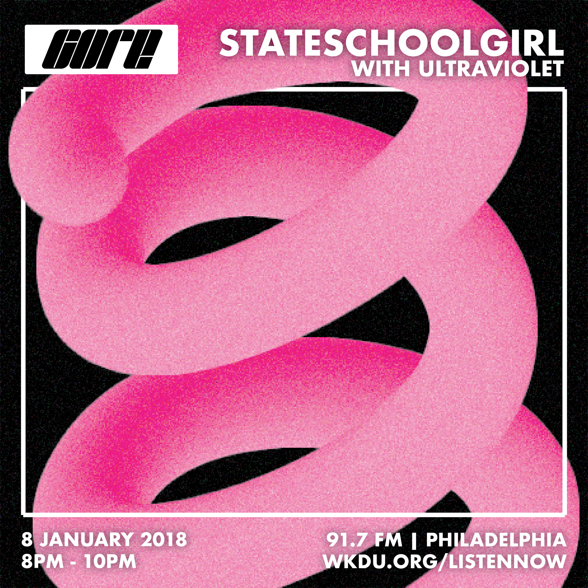
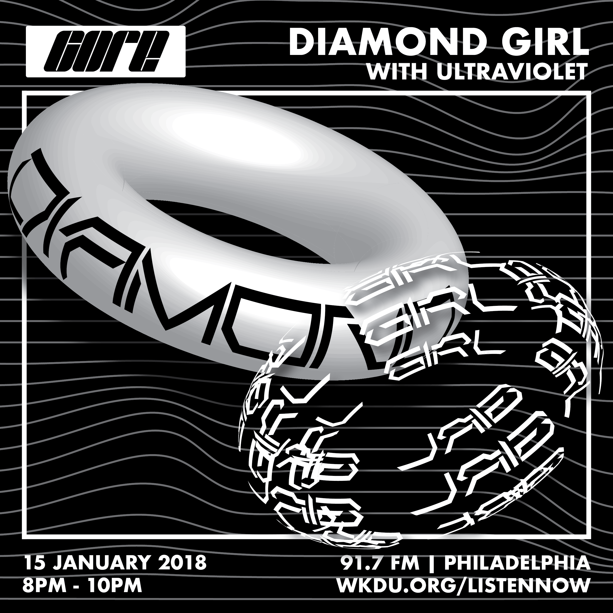
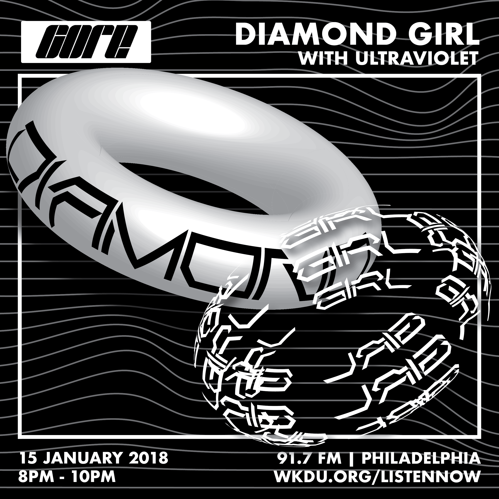
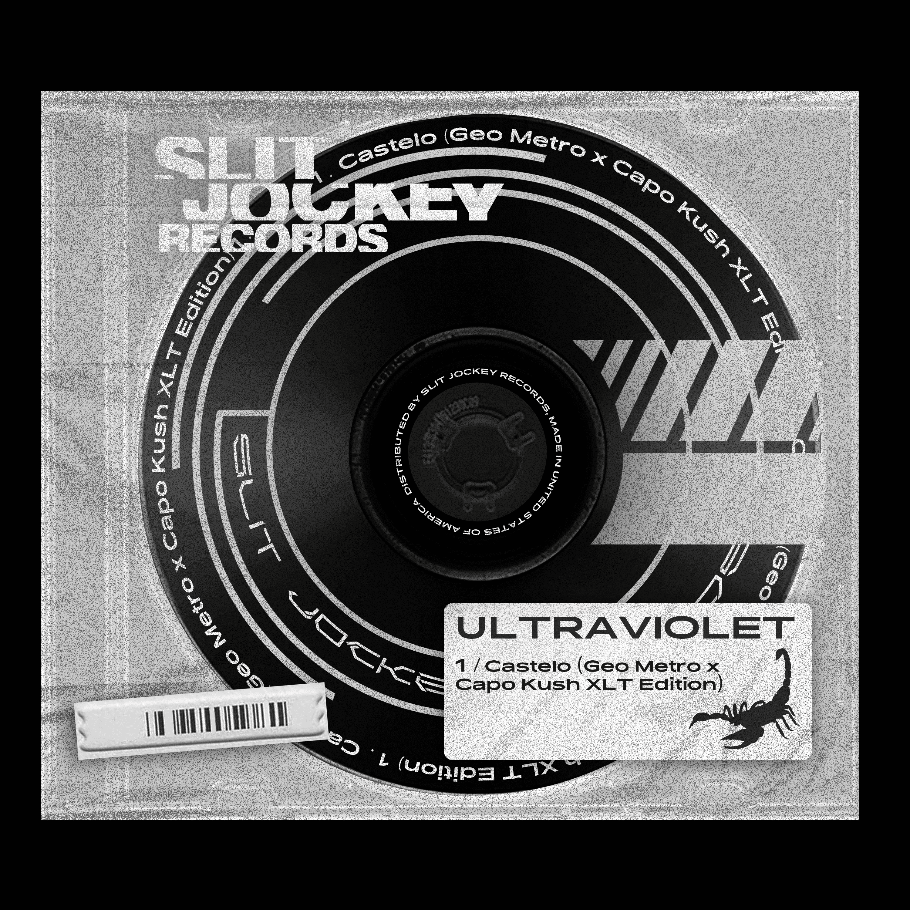
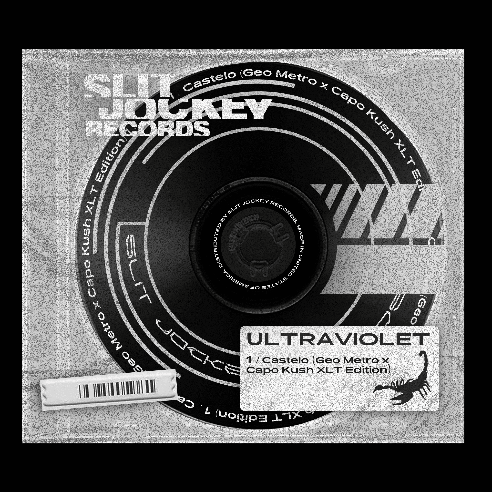

Core Radio is an live weekly radio program on WKDU 91.7FM in Philadelphia. Grime, trance, and techno music aired every Tuesday for one hour. I designed a visual system and produced a collection of digital flyers made for Core Radio.
 

 


 
